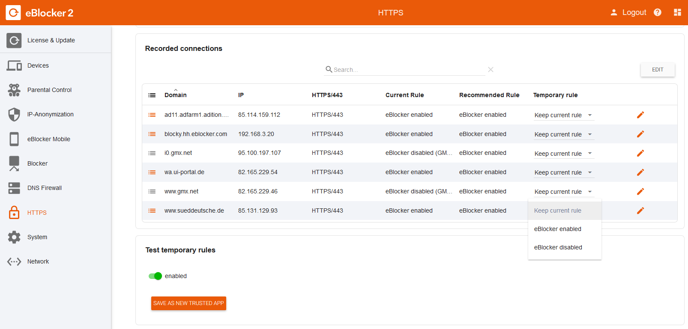
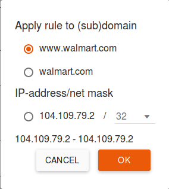
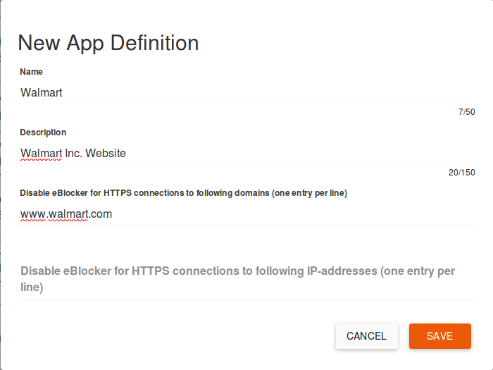

eBlocker Help > Knowledge Base > Use cases
With the eBlocker HTTPS Diagnostics you can investigate independently why individual apps may not work in connection with the eBlocker while SSL function is in use. You can then define an exception rule to resolve problems with individual apps yourself.
Go to the eBlocker "Settings > HTTPS -> MANUAL RECORDING" and select the device on which you want to use the app. Now select the duration of the recording and the maximum size of the recording file. Usually the preselected duration of the recording and the maximum size of the recording file are sufficient.
Click on the "Start" button to start the recording.
Use the app as usual and especially test the functions that do not seem to be compatible with the eBlocker.
Stop the recording by clicking on the "Stop" button. After a few seconds the eBlocker will show you a list of connections.
Not all listed connections originate from the app, since the eBlocker records all current connections of the device. Connections that the eBlocker does not allow are displayed with "eBlocker active" and connections for which an exception already exists are displayed with the name of the exception rule.
Tip: Mostly you recognize the blocked domains by their names in the recording. The name of the domain is often associated with the app or the manufacturer of the app.

If the eBlocker is active for a connection, you can choose whether the eBlocker should now be deactivated for the found subdomain, the domain or, if applicable, for the IP address of the domain.

You can now temporarily test or save your new settings. To save your new exception rule, click on the "Save as" button.

Select a meaningful name and enter a short description if necessary. The list of trusted apps can be searched for the terms contained therein in the future. The subdomains, domains, or IP addresses you have approved are already in the relevant fields.

If you now click on the "Save" button, your new exception rule will be saved. Your exception rule is now active and visible in the eBlocker Settings > Apps menu.
Sometimes it can take several tests until an app, or website, runs with eBlocker.
Please also note our FAQ's.